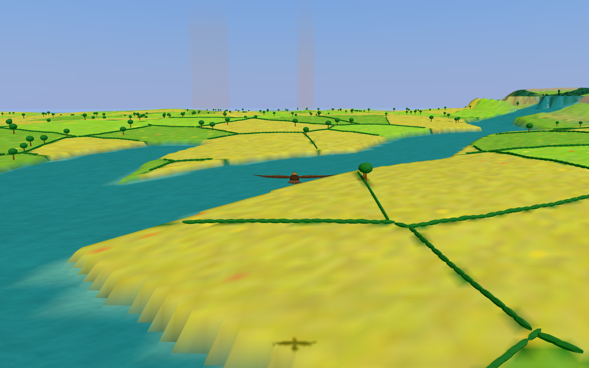
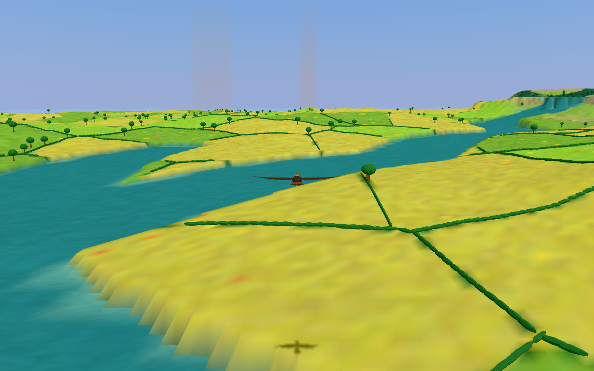
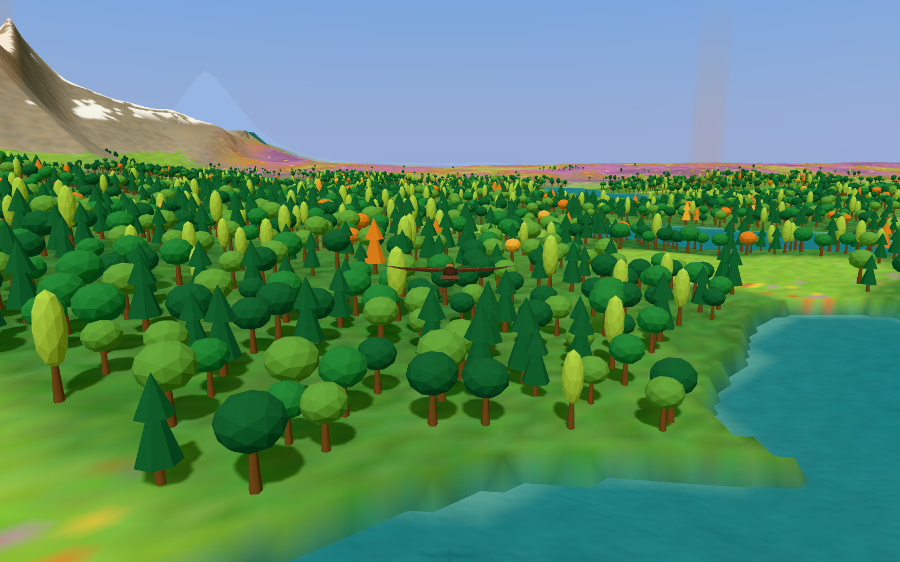
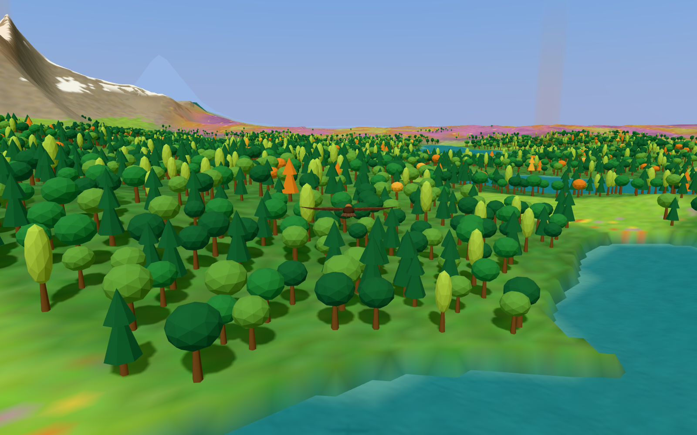
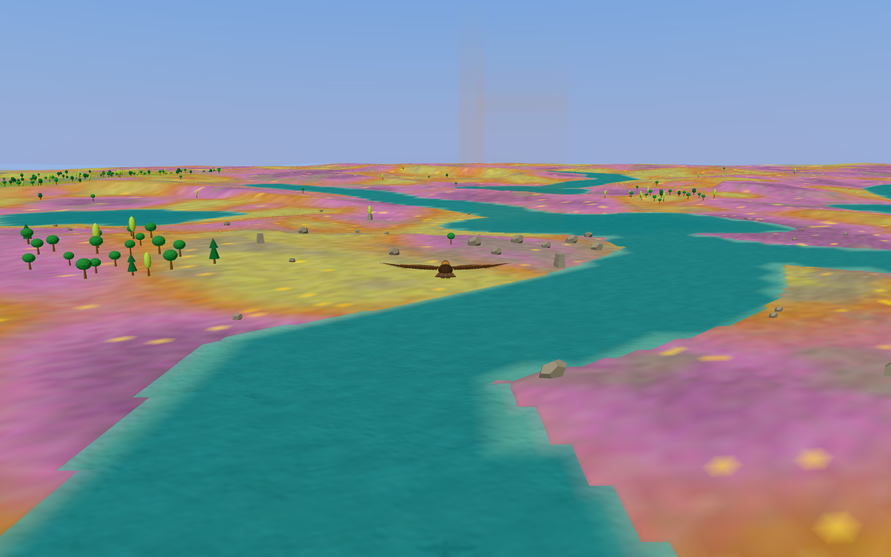
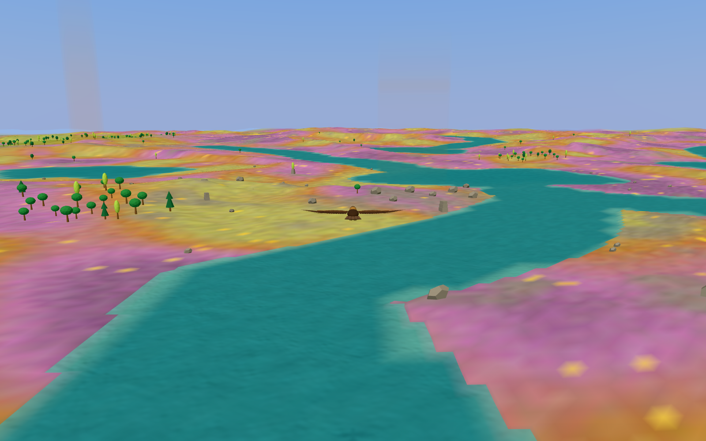

Lowland hills: validated
Issue #86 · Shared 520 m hills, biome-specific heights, unchanged drainage.
Approved behavior
The warped hill shape uses 48 m in Hills and 38 m in Woodland and Moor. Lakeland keeps its underlying landform. Hills fade near water banks; rivers and lakes keep their existing drainage field, as approved in option B.
Moor peat sites receive smooth level shelves. Pool counts match the baseline for all three measured seeds. Farmland parcels, hedgerows, tors and Lakeland islands remain covered by the existing checks.
Same seeds as #85
| Seed | Median slope | Summit drop at 100 m | Peat pool count |
|---|
| 42 | 4.08° → 5.88° | 1.84 m → 5.12 m | 16 → 16 |
| 80231 | 3.67° → 5.57° | 2.23 m → 6.13 m | 5 → 5 |
| 57 | 3.64° → 5.91° | 2.32 m → 7.27 m | 24 → 24 |
The lowland grid spans 16 km at 160 m intervals. Slopes use a 40 m central difference; summit drop uses four samples 100 m from each sampled local top. Peat counts cover 48 km. These measurements do not claim FWM's whole-land 11.6° slope: Soaring retains its broad profiles and valley carving.
Same seed and camera
Seed 5 · noon · default chase camera · 1600×1000 · 5 km visibility. Both captures wait for complete terrain. Flight height follows the ground.
Hills · (28000, 0)

Before
AfterWoodland · (−7800, −7800)

Before
AfterMoor · (−6900, 4000)

Before
AfterValidation and the approved exception
Check: 56 tests, TypeScript and build pass. Smoke: 34 tests pass. The branch is rebased on current main, including the pixel cap.
The captain approved seed 0's route progress at about 30.1%, rather than 35%. Only that seed's minimum changes to 30%. Other route assertions and all terrain-clearance checks remain. Navigation behavior is unchanged.
At the original Highlands vantage, flapping changes from 258.2 s to 350.8 s per hour. Minimum clearance changes from 12.400 m to 12.286 m. Both runs have zero safety corrections. Peak vertical speed remains 4 m/s. No energy metric is present.
A hill-free valley clamp regression was corrected; the original Highlands fixture and its safety assertions remain unchanged.
Repeatable scripts and raw records are linked in the evidence README. This board uses Soaring's existing colors from src/style.css.